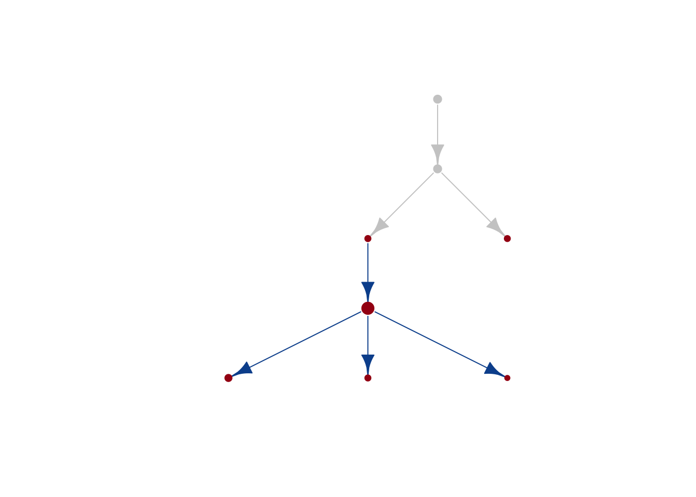

4.4 Plotting the data
library(dplyr)
library(tidyr)
library(reshape2)
library(RColorBrewer)
library(igraph)
options(stringsAsFactors = FALSE)
setwd("/Users/bowmanr/Projects/scDNA/scDNA_myeloid/")
final_sample_summary<-readRDS(file="./data/final_sample_summary.rds")
pheno<-readRDS(file="./data/pheno.rds")
graph_results <-readRDS(file="./data/graph_results_complete.rds")
final_results<-readRDS(file="./data/MDP_trajectory_final.rds")plot_optimal_graph_for_trajectory_new("MSK78",optimal_mutants_only=TRUE)
output<-lapply(names(final_results),function(sample){
if(!sample%in%c("MSK94")){
final<-trajectory_summariztion(sample,optimal_mutants_only = FALSE)
if(final=="error"){
return(NULL)
} else {
final%>%group_by(initiating_mutation)%>%
distinct(nextState,reward)%>%
summarize(total=sum(reward))
}}
})
genes_of_interest <- c("ASXL1","DNMT3A","TET2","IDH1","IDH2","NPM1","KRAS","NRAS","PTPN11","FLT3","JAK2")
out_mat<-data.frame(do.call(rbind,output))%>%filter(initiating_mutation!="exclude")
out_mat$Gene <- do.call(rbind,strsplit(out_mat$initiating_mutation,split="[_\\.]"))[,1]
out_mat<- out_mat%>%filter(Gene%in%genes_of_interest)
out_mat$total <- as.numeric(out_mat$total)
gene_order <- out_mat%>%group_by(Gene)%>%summarize(median=median(total))%>%arrange(median)%>%pull(Gene)
out_mat$Gene <- factor(out_mat$Gene,levels=gene_order)
ggA<-ggplot(out_mat,aes(x=Gene,y=total,fill=Gene))+
geom_boxplot(outlier.shape=NA)+
scale_fill_manual(values=tol.rainbow(n=length(levels(out_mat$Gene))))+
geom_jitter(width=0.2,size=0.5)+ coord_flip()+theme_bw(base_size=8)+
guides(fill=FALSE)+
ylab("Fraction of sample explained \n by initiating mutation")A<- "NPM1"
B<-"NRAS"
double_mutant_samples<-names(graph_results)[do.call(c,lapply(names(graph_results),function(x){
with(graph_results[[x]],any(grepl(A,unique(Action)))&any(grepl(B,unique(Action))))
}))]
double_mutant_order<-setNames(lapply(double_mutant_samples,function(x){
sample <- final_sample_summary[[x]]
mutations <- colnames(sample$NGT)
clones<- sample$Clone
A_het_clones <-sample$Architecture%>%filter(Genotype=="Heterozygous")%>%filter(grepl(A,Mutant))%>%distinct(Clone)%>%pull(Clone)
B_het_clones <-sample$Architecture%>%filter(Genotype=="Heterozygous")%>%filter(grepl(B,Mutant))%>%distinct(Clone)%>%pull(Clone)
AB_het_clones<-intersect(A_het_clones,B_het_clones)
AB_clone_sizes <- graph_results[[x]]%>%filter(NextState%in%AB_het_clones)%>%filter(grepl(A,Action)|grepl(B,Action))%>%filter(Reward==max(Reward))%>%distinct(Reward)%>%pull(Reward)
antecdenent_options<-graph_results[[x]]%>%filter(NextState%in%AB_het_clones)%>%filter(grepl(A,Action)|grepl(B,Action))%>%filter(Reward==max(Reward))
antecendent_clones<-graph_results[[x]]%>%filter(NextState%in%antecdenent_options$State)%>%filter(Reward!=0)
set<-setNames(merge(antecdenent_options[,1:4],antecendent_clones[,3:4],by.x="State",by.y="NextState"),
c("Antecedent","Mutation","Max_het_state","Max_het_size","Antecednet_size"))
Mut_A <- set%>%filter(grepl(A,set$Mutation))%>%distinct(Mutation,Antecednet_size)%>%filter(Antecednet_size==max(Antecednet_size))%>%pull(Mutation)
Mut_B <- set%>%filter(grepl(B,set$Mutation))%>%distinct(Mutation,Antecednet_size)%>%filter(Antecednet_size==max(Antecednet_size))%>%pull(Mutation)
set <- set%>%filter(Mutation%in%c(Mut_A,Mut_B))
convergence <- ifelse((any(grepl(A,set$Mutation)) &any(grepl(B,set$Mutation))),"Yes","No")
if(convergence=="Yes"){
sizes <- setNames(data.frame("Double_mutant"=unique(set$Max_het_size),
B=unique(set%>%filter(grepl(A,set$Mutation))%>%pull(Antecednet_size)),
A=unique(set%>%filter(grepl(B,set$Mutation))%>%pull(Antecednet_size))),
c("Double_mutant",B,A))
} else if(any(grepl(B,set$Mutation))) {
sizes <- setNames(data.frame("Double_mutant"=unique(set$Max_het_size),
A=unique(set%>%filter(grepl(B,set$Mutation))%>%pull(Antecednet_size))),
c("Double_mutant",A))
} else if(any(grepl(A,set$Mutation))) {
sizes <- setNames(data.frame("Double_mutant"=unique(set$Max_het_size),
B=unique(set%>%filter(grepl(A,set$Mutation))%>%pull(Antecednet_size))),
c("Double_mutant",B))
} else if(nrow(set)<1){
return(data.frame("Double_mutant"=0))
}
return(sizes)
}),double_mutant_samples)
double_mutant_order$Dummy <- data.frame(A=0,
"Double_mutant"=0,
B=0)
colnames(double_mutant_order$Dummy) <- c(A,"Double_mutant",B)
double_mutant_order_mat<-plyr::rbind.fill(setNames(lapply(double_mutant_order,function(x){data.frame(x)}),c(double_mutant_samples)))
rownames(double_mutant_order_mat) <- c(double_mutant_samples,"Dummy")
double_mutant_order_mat$Sample <- rownames(double_mutant_order_mat)
double_mutant_order_mat<- double_mutant_order_mat%>%filter(!Double_mutant==0&!Sample=="Dummy")
double_mutant_order_mat$Convergence <- ifelse((!is.na(double_mutant_order_mat[,A])&!is.na(double_mutant_order_mat[,B]))&
double_mutant_order_mat[,A]>0&
double_mutant_order_mat[,B]>0,"Convergent",
ifelse(is.na(double_mutant_order_mat[,A])&double_mutant_order_mat[,B]>0,B,A))
melted_set <-setNames(melt(double_mutant_order_mat),c("Sample","Convergence","Clone","Size"))
melted_set$Clone <-factor(melted_set$Clone,levels=c(A,"Double_mutant",B))
melted_set$Clone <-plyr::revalue(melted_set$Clone,c("Double_mutant"="Double mutant"))
melted_set$Convergence <-factor(melted_set$Convergence,levels=c("Convergent",A,B))
melted_set[is.na(melted_set)]<-0
gene_name_A <- melted_set%>%filter(Convergence==A)
colors_set <- c("black",
"black",
brewer.pal(5,"Blues")[5],
brewer.pal(5,"Reds")[5])
names(colors_set) <- c("Double mutant","Convergent",A,B)
alpha_set <- c(0.5,0.5,1,1)
names(alpha_set) <- names(colors_set)
melted_set$Mutation_status <- factor(ifelse(melted_set$Clone=="Double mutant","Double mutant","Single Mutant"),levels=c("Single Mutant","Double mutant"))
melted_set_x<-rbind(melted_set%>%filter(Mutation_status=="Double mutant"),melted_set)
samples <- tally(melted_set%>%distinct(Sample))%>%pull(n)
melted_set_x[1:(samples),"Gene"] <-A
melted_set_x[(samples+1):(2*samples),"Gene"] <-B
melted_set_x[is.na(melted_set_x$Gene),"Gene"] <- as.character(melted_set_x[is.na(melted_set_x$Gene),"Clone"])
melted_set_x$Group2 <- paste(melted_set_x$Sample,melted_set_x$Gene,sep=" ")
ggA<-ggplot(melted_set_x#%>%
# filter(Convergence=="Convergent")%>%
# distinct(Sample,Clone,Size,Gene)
,aes(x=Clone,y=Size/100,group=Sample))+
geom_point(aes(fill=Clone),shape=ifelse(melted_set_x$Size==0,1,21), size=2) +
geom_line(aes(color=Gene),guide=FALSE)+
scale_fill_manual(values=colors_set[-2],guide=FALSE) +
scale_colour_manual(values=colors_set[-2],guide=FALSE) +
ggtitle(paste(A,B))+
theme_classic(base_size=8)+theme(plot.title = element_text(hjust=0.5))+
ylab("Fraction of sample \n in mutant clone")+
xlab("")#+
#melted_set%>%filter(Clone%in%c(A,B))%>%summarize(p=t.test(Size~Clone)$p.value)
#melted_set%>%filter(Clone%in%c(A,"Double_mutant"))%>%summarize(p=t.test(Size~Clone)$p.value)
#melted_set%>%filter(Clone%in%c(B,"Double_mutant"))%>%summarize(p=t.test(Size~Clone)$p.value)
ggB<-ggplot(melted_set%>%distinct(Sample,Convergence),
aes(x=Convergence,fill=Convergence))+
scale_fill_manual(values=colors_set,guide=FALSE) +
geom_bar()+theme_classic(base_size=8)+
ggtitle("Initiating Mutation")+
scale_y_continuous(expand=c(0,0))+
theme(plot.title = element_text(hjust=0.5))+
scale_x_discrete(drop=FALSE)+
xlab("")#+
ggC<-ggplot(melted_set%>%filter(Clone%in%c(A,B)),aes(x=Clone,y=Size/100,fill=Clone))+
geom_boxplot()+
theme_classic(base_size=8)+
scale_fill_manual(values=colors_set,guide=FALSE) +
ggtitle("Single mutant \n clone size")+
ylab("Fraction of sample in \n single mutant clone")+
theme(plot.title = element_text(hjust=0.5))+
#scale_x_discrete(drop=FALSE)+
xlab("")#+